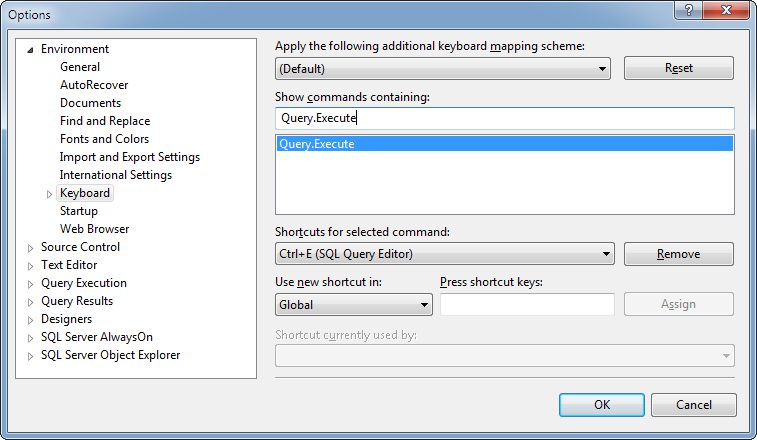

I'm very used to using Ctrl-E to execute my query.
In a recent version of SQL Server Management Studio this key combo was no longer mapped.
To get it mapped again:

Tools | Options | Environment | Keyboard | Query.Execute
Go into "Press shortcut keys", hit Ctrl-E and it'll show you that you're overwriting the combo for word wrap or something.
Do it!
SIMILARLY.... Query.ResultsToGrid should be Ctrl-D but is not. So fix that while you're there.
(I'm not even game to check up on Alt-X)